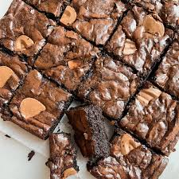

|  |
Fudgy BrownieDescription : Fudgy Brownies are decadent chocolate treats beloved for their dense and moist texture. Made with rich cocoa powder, melted chocolate, butter, and sugar, these brownies boast a deep chocolate flavor with a slight chewiness. Whether enjoyed warm with a scoop of ice cream or simply dusted with powdered sugar, Fudgy Brownies are a timeless dessert that satisfies chocolate cravings and brings joy to any gathering or sweet indulgence. |
| Calories | Protein (g) | Fat (g) | Carbohydrates (g) | Fiber (g) | Sodium (mg) |
|---|---|---|---|---|---|
| 350 | 4g | 18g | 45g | 2g | 150mg |